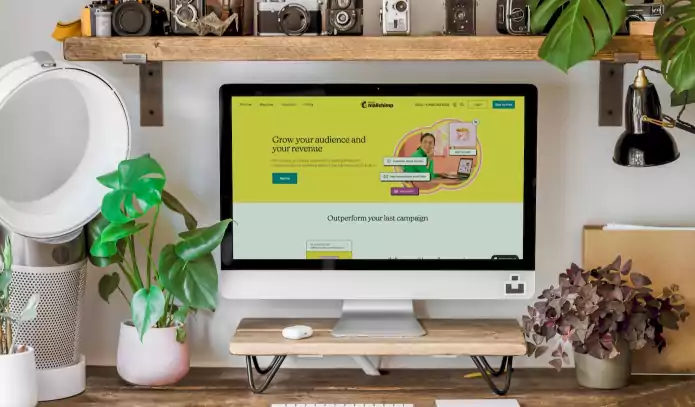
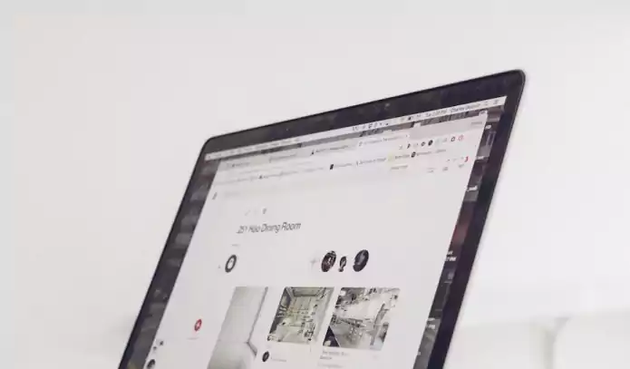

Projects

Scrum Board App
Scrumboard is an app I developed during my internship at Linuxjobber. I made it using Django and was challenged on learning how to deploy it on AWS.
- Django
- AWS

Websocket Chat App
This is another chat app I developed during my internship at Linuxjobber. I used django to handle the backend, and used AWS Websocket API Gateway to handle message transmission.
- Django
- Python
- AWS
- Websocket